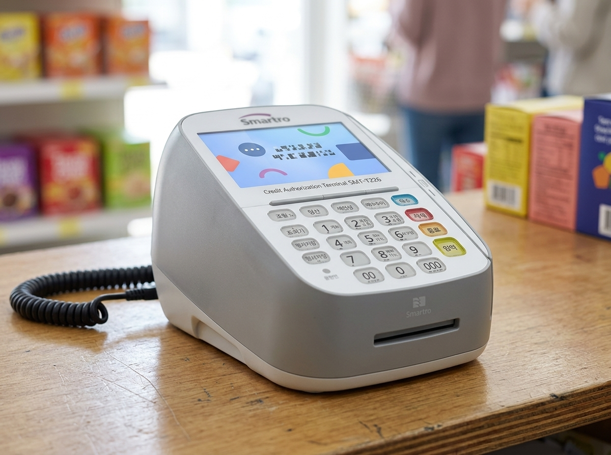

간이과세자와 일반과세자, 뭐가 유리할까? 매출과 업종부터 따져야 합니다
결론부터 말씀드리면, 간이과세자와 일반과세자 중 무엇이 유리한지는 '정답'이 아니라 '우리 매장 상황'에 달려 있습니다. 매출 규모, 업종, 초기 시설투자, 주요 거래처가 개인인지 사업자인지에 따라 유불리가 갈리기 때문입니다. 저희 누리네트웍스는 14년간 수도권 3만여 매장의 결제 현장을 함께해 오며, 사업자 유형을 몰라서 부가세 신고 때마다 당황하는 사장님들을 자주 만났습니다. 이 글에서는 두 유형의 차이를 쉽게 정리하되, 세금은 개인 상황에 따라 크게 달라지므로 마지막에 국세청 홈택스·세무사 확인을 꼭 권해드립니다.
간이과세자와 일반과세자, 어떻게 나뉘나요
부가가치세를 내는 사업자는 크게 간이과세자와 일반과세자로 나뉩니다. 기준이 되는 것은 주로 연 매출 규모입니다. 연간 매출이 일정 기준 미만이면 간이과세자로, 그 이상이면 일반과세자로 분류되는 것이 기본 틀입니다.
간이과세자는 부가세 부담과 신고가 상대적으로 간단해, 매출 규모가 작은 초기 매장에 부담이 적은 편입니다. 다만 세금계산서 발행에 제약이 있을 수 있고, 매입세액 공제 폭이 제한되는 특징이 있습니다. 일반과세자는 신고가 조금 더 복잡하지만, 매입세액 공제를 온전히 받을 수 있어 초기 시설투자나 사업자 간 거래가 많은 매장에 유리할 수 있습니다.
여기서 중요한 점은 매출 기준 금액과 업종별 예외가 제도 개편으로 자주 바뀐다는 것입니다. 특정 금액을 외우기보다, 우리 매장이 지금 어느 유형에 해당하는지를 국세청 홈택스에서 확인하는 습관이 더 안전합니다.
우리 매장엔 어느 쪽이 맞을까
아래 표는 유불리를 판단할 때 참고할 개념 정리입니다. 실제 적용은 개인 상황에 따라 달라지므로 참고용으로만 봐 주세요.
| 상황 | 상대적으로 유리할 수 있는 유형 |
|---|---|
| 매출 규모가 작은 초기 매장 | 간이과세자 |
| 초기 인테리어·설비 투자가 큼 | 일반과세자(매입공제) |
| 거래처가 주로 사업자(세금계산서 필요) | 일반과세자 |
| 손님이 대부분 일반 소비자 | 간이과세자 |
| 매출이 빠르게 늘어나는 중 | 유형 전환 대비 필요 |
특히 개업 초기에 인테리어·주방설비 등 큰 투자를 했다면, 일반과세자로서 매입세액 공제를 받는 편이 유리할 수 있습니다. 반대로 소액 매출의 동네 매장이라면 간이과세가 부담이 적을 수 있습니다. 다만 이는 일반적인 경향일 뿐, 실제 세액은 매출·매입 구조에 따라 정반대가 되기도 합니다. 우리 매장에 맞는 판단은 세무사 상담이나 국세청 홈택스·국세상담센터(126) 확인이 가장 정확합니다.

사업자 유형 관리, 이것만은 챙기세요
사업자 유형과 관련해 사장님이 놓치기 쉬운 부분을 정리합니다.
첫째, 매출이 늘면 유형이 바뀔 수 있습니다. 간이과세자로 시작했더라도 매출이 기준을 넘으면 일반과세자로 전환됩니다. 갑자기 부가세 부담 방식이 달라져 당황하지 않도록, 매출 흐름을 미리 파악해 두는 것이 좋습니다. 둘째, 매출·매입 자료를 성실히 남깁니다. 카드매출, 현금영수증, 세금계산서, 매입 자료가 정리돼 있어야 어느 유형이든 신고가 수월합니다. 셋째, 신고 기간을 놓치지 않습니다. 부가세 신고 시기는 유형에 따라 다르며, 기한을 넘기면 가산세가 붙을 수 있으니 일정을 미리 챙기세요.
이 모든 것의 출발점은 매출 데이터가 자동으로 정리되는 환경입니다. 누리네트웍스는 수도권을 직접 방문해 설치·관리하는 포스·결제 단말 전문 업체로, 카드·현금·간편결제 매출이 포스에 한데 모이도록 매장 환경을 갖춰 드립니다. 자료가 깔끔하게 정리돼 있으면 어느 과세유형이든 신고 준비가 훨씬 쉬워집니다. 저희가 세무 신고를 대신하지는 않지만, 그 기초가 되는 결제·기록 환경을 든든하게 받쳐 드립니다. 정확한 가격은 매장 구성에 따라 달라지므로 상담 시 안내해 드리며, 유선·무선 카드단말기부터 포스까지 매장에 맞게 구성해 드립니다.
자주 묻는 질문(FAQ)
Q. 무조건 간이과세자가 세금이 적은 것 아닌가요?
꼭 그렇지 않습니다. 초기 투자가 크거나 매입이 많은 매장은 일반과세자로 매입세액 공제를 받는 편이 유리할 수 있습니다. 유불리는 매장마다 다르므로 세무사·국세청 상담으로 확인하시길 권합니다.
Q. 간이과세자 기준 매출은 얼마인가요?
기준 금액과 업종별 예외는 제도 개편으로 바뀝니다. 정확한 현재 기준은 국세청 홈택스나 국세상담센터(126)에서 확인하시는 것이 안전합니다. 확인되지 않은 숫자를 그대로 믿지 마세요.
Q. 유형을 내가 직접 선택할 수 있나요?
매출 기준 등 요건에 따라 결정되는 부분이 있어 완전히 자유롭게 고르기는 어렵습니다. 다만 사업 초기 판단이나 전환 시기에는 선택지가 생길 수 있으니, 개업 전 세무사와 상담해 보시길 권합니다.
매장의 기록, 함께 든든하게 챙깁니다
과세유형 판단은 세무사와, 그 판단의 기초가 되는 매출 기록은 안정적인 포스와 함께하는 것이 순서입니다. 누리네트웍스가 매장의 결제·기록 환경을 든든하게 마련해 드리겠습니다. 수도권 어디든 직접 방문해 상담해 드리니, 부담 없이 문의 주세요.
- 📞 전화상담 1544-7754
- 🌐 홈페이지 nwpos.co.kr
- 📷 인스타그램 instagram.com/nurinetworkspos
- ▶️ 유튜브 youtube.com/@nurinetworks


이미지1-매장: 낮 시간 동네 소매점(편의점) 계산대에서 밝게 응대하는 30대 여성 사장님 장면
이미지2-제품: 계산대 위 유선 카드단말기를 가까이서 담은 제품 컷
이미지3-사용: 손님이 유선 카드단말기에 카드를 넣어 결제하는 순간(IC 슬롯)